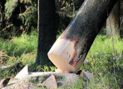
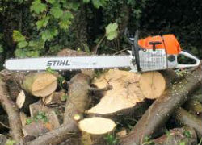

The objective of this technique is to be able to present our style of cutting without posting any unpleasant noise for Customer.
- Cutting of Dengerous Trees
- Mulching & Chipping of Trees
- Site Clearance of Trees
- We take Surveys / Planning
- Removal of Emergency fallign Trees & stump
We love and appreciate big mature trees. However all too often trees are not maintained properly resulting in dangerous situations. We can enjoy living side by side with these green giants if we reduce the risk.
This is done by reducing the height and spread of the tree canopy, thus reducing
the amount of wind resistance or ‘sail’ area of the tree itself.
click button up to get quote.
Each tree is examined individually in relation to size, shape, age, condition, site and species.
All pruning is carried out with care and respect for the tree by qualified arborists
only.
Each branch is removed using the ABC cut method ensuring the branch collar remains intact. Any large limbs are removed using ropes and slings. Controlled lowering of all material is an integral feature of our work. Formative pruning may also include ‘crown lifting’.
This involves the removal of lower branches to achieve a required height clearance from ground level to the first branch. This is useful when it comes to obstructions to footpaths, lawns, roads, rooftops and buildings. This is usually carried out for trees which are growing too large for their position or may have biomechanical structural faults. We also identify and remove dead or unstable branches.
Although hedge trimming is usually carried out by gardeners, we have an
extensive client list for this service. We can trim small hedges
and shrubs to a neat and natural shape or we can also cut larger
overgrown hedges such as a row of conifers to a manageable height Formative tree
pruning is the professional removal of branches from trees using
practices that are approved to achieve a specific objective. During the early stages
of a tree’s growth cycle, minor pruning should be implemented to fix any found defects
or other defected ailments that may develop into an issue in its later life.
Effective pruning will promote new development and growth. If the tree is in a
healthy condition, it should respond well to this.
.

Old decayed stems are removed along with bacterial infected diseased plants.
After these wounds have fully healed, further pruning will then stimulate
new growth and reshape the tree into a better form. We have a full workforce
of professionally trained tree surgeons to perform effective tree pruning
practices which are up to date with the latest regulations.
Our fleet is
fully equipped with modern equipment such as pole saws for difficult to
reach places and lightweight pruning saws for accurate close pruning.
We adopt a clear systematic method of evaluating risk that helps ensure that the
best outcome and management decisions are reached.